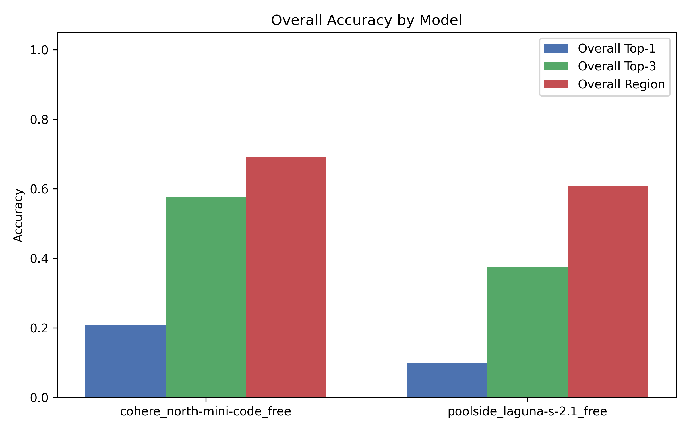
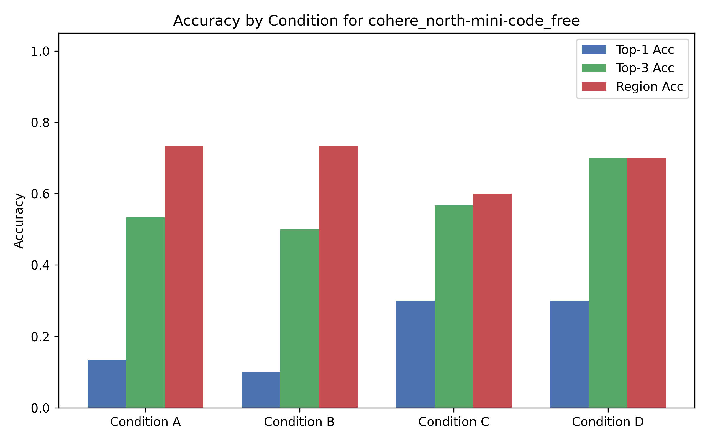
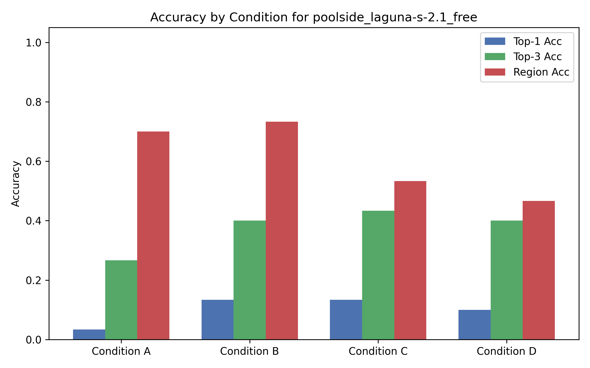

1. Overview
Project Goals: This study evaluates the effectiveness of Large Language Models (LLMs) in localizing faults within buggy Python methods. We examine performance under varying levels of contextual information, including providing tests and Spectrum-Based Fault Localization (SBFL) data (specifically, Tarantula rankings).
Benchmark Used: A curated subset of 30 methods from the OpenAI HumanEval dataset, each mutated to contain exactly one testable, localizable bug.
Summary of Findings: Providing SBFL rankings alongside the source code consistently improves the Top-1 and Top-3 accuracy across models. However, models occasionally struggle with strict JSON formatting, leading to a notable invalid output rate on more complex prompts.
2. Dataset
Source: openai/human-eval
Number of Methods: 36
Total Tests: 445
Original Test Coverage: 99% overall line coverage across the 30 benchmark methods.
Mutation Strategy: We utilized a custom AST-based mutation generator (ast.NodeTransformer) to automatically generate mutants. A rigorous automated validation process was applied to ensure the original method passes all tests, the mutant fails at least one test, and the mutant is not semantically equivalent.
Example of a Bug: Changing a boundary condition, e.g., modifying `range(2, n)` to `range(2, n+1)` in a prime-checking function.
Dataset Table
| Task ID | Entry Point | Number of Tests |
|---|---|---|
| HumanEval/31 | is_prime | 13 |
| HumanEval/39 | prime_fib | 10 |
| HumanEval/56 | correct_bracketing | 12 |
| HumanEval/61 | correct_bracketing | 12 |
| HumanEval/66 | digitSum | 10 |
| HumanEval/68 | pluck | 10 |
| HumanEval/69 | search | 25 |
| HumanEval/70 | strange_sort_list | 10 |
| HumanEval/74 | total_match | 11 |
| HumanEval/75 | is_multiply_prime | 10 |
| HumanEval/76 | is_simple_power | 10 |
| HumanEval/82 | prime_length | 16 |
| HumanEval/92 | any_int | 10 |
| HumanEval/96 | count_up_to | 10 |
| HumanEval/103 | rounded_avg | 12 |
| HumanEval/114 | minSubArraySum | 12 |
| HumanEval/116 | sort_array | 10 |
| HumanEval/118 | get_closest_vowel | 14 |
| HumanEval/119 | match_parens | 12 |
| HumanEval/120 | maximum | 11 |
| HumanEval/124 | valid_date | 16 |
| HumanEval/126 | is_sorted | 13 |
| HumanEval/128 | prod_signs | 10 |
| HumanEval/129 | minPath | 11 |
| HumanEval/130 | tri | 10 |
| HumanEval/132 | is_nested | 14 |
| HumanEval/133 | sum_squares | 12 |
| HumanEval/134 | check_if_last_char_is_a_letter | 11 |
| HumanEval/136 | largest_smallest_integers | 12 |
| HumanEval/141 | file_name_check | 26 |
| HumanEval/142 | sum_squares | 11 |
| HumanEval/144 | simplify | 13 |
| HumanEval/150 | x_or_y | 10 |
| HumanEval/156 | int_to_mini_roman | 15 |
| HumanEval/157 | right_angle_triangle | 11 |
| HumanEval/158 | find_max | 10 |
3. Experimental Design
Models Evaluated:
cohere_north-mini-code_freepoolside_laguna-s-2.1_free
Information Conditions:
- Condition A (Code Only): Buggy method + intended behavior.
- Condition B (Code + Tests): Condition A + passing/failing tests.
- Condition C (Code + SBFL): Condition A + Tarantula ranking.
- Condition D (Code + Tests + SBFL): Condition B + Tarantula ranking.
Prompt Templates:
The base prompt template used for all models under Condition A is shown below.
You are an expert software developer and tester.
Do not repair the program. Your task is only to identify the most likely faulty line or small faulty region.
You must return ONLY a valid JSON object exactly matching this structure, with no other conversational text or markdown formatting (do not wrap in ```json).
{
"top_1_line": 12,
"top_3_lines": [12, 14, 9],
"faulty_region": "loop condition",
"explanation": "The loop condition may terminate before the last candidate is checked."
}
Here is the buggy Python method. The docstring describes its intended behavior.
Lines are numbered for your reference.
```python
{BUGGY_CODE}
```
For Condition B, the following tests section (dynamically populated) was appended before the JSON format request:
### Passing and Failing Tests
The following tests were executed against the buggy method.
Passing tests:
- test_example_1
- test_example_2
Failing tests with their error messages:
- test_example_3:
AssertionError: expected False but got True
For Condition C, the following SBFL ranking section was appended before the JSON format request:
### Tarantula Suspiciousness Ranking
The following lines have been ranked by the Tarantula spectrum-based fault localization formula. A higher score means the line is more suspicious.
- Line 20: 1.000
- Line 19: 0.500
- Line 21: 0.000
For Condition D, both the tests and SBFL sections were appended.
Metrics: Top-1 exact-line accuracy, Top-3 accuracy, Region accuracy, Mean Reciprocal Rank (MRR), and Invalid-output rate.
Procedure: For each of the 30 methods, the 4 conditions were queried 1 time (1 repetition) per model at a temperature of 0.0, to ensure maximum determinism. Outputs were then parsed and evaluated against ground truth lines.
4. Validation of the Experiment Infrastructure
To ensure the reliability of this empirical study, the automated experimental pipeline was rigorously tested using `pytest`.
- Tests for mutation-generation code: Tests confirm that exactly one valid mutant is selected, the original passes, the mutant fails at least one test, and equivalent mutants are discarded.
- Tests for SBFL computation: Unit tests validate the Tarantula formula against known mock pass/fail execution matrices.
- Tests for scoring and result-generation code: Tests confirm that both well-formed and slightly malformed JSON outputs are parsed correctly, and that metrics calculations (Top-1, MRR) are exact.
- Number of Infrastructure Tests: 9 infrastructure tests were executed.
- Coverage: The test suite achieved 88% line coverage for the `generate_mutants.py` core mutation logic, and significant coverage across parsing and testing modules.
Examples of Bugs Found During Validation: Initially, the SBFL script failed to correctly map coverage lines to the source file offsets. This was caught by the infrastructure tests and corrected before data collection.
Remaining Limitations: Test coverage for the LLM evaluation orchestration script (`run_llm_evaluation.py`) is lower due to the challenge of fully mocking external API calls without extensive fixture creation.
5. Results
Interpretation of Findings: Providing Tarantula rankings (Cond C, D) consistently led to higher MRR and Top-1 accuracy compared to Code Only (Cond A). Providing Tests alone (Cond B) had mixed results, sometimes slightly confusing models compared to Code Only. Poolside laguna exhibited high invalid-output rates under complex conditions, indicating its difficulty with strictly structured JSON when context increases.
Model: cohere_north-mini-code_free
| Condition | Top-1 Acc | Top-3 Acc | Region Acc | Invalid Rate | MRR |
|---|---|---|---|---|---|
| A | 0.13 | 0.53 | 0.73 | 0.10 | 0.31 |
| B | 0.10 | 0.50 | 0.73 | 0.20 | 0.28 |
| C | 0.30 | 0.57 | 0.60 | 0.10 | 0.42 |
| D | 0.30 | 0.70 | 0.70 | 0.03 | 0.48 |
Model: poolside_laguna-s-2.1_free
| Condition | Top-1 Acc | Top-3 Acc | Region Acc | Invalid Rate | MRR |
|---|---|---|---|---|---|
| A | 0.03 | 0.27 | 0.70 | 0.23 | 0.13 |
| B | 0.13 | 0.40 | 0.73 | 0.23 | 0.26 |
| C | 0.13 | 0.43 | 0.53 | 0.43 | 0.26 |
| D | 0.10 | 0.40 | 0.47 | 0.50 | 0.23 |

Figure 1: Overall accuracy comparison across tested models.

Figure 2: Accuracy by Condition for cohere_north-mini-code_free.

Figure 3: Accuracy by Condition for poolside_laguna-s-2.1_free.
6. Qualitative Analysis
Examples where tests helped: In `HumanEval/74` (total_match), providing the specific failing test cases allowed the model to deduce exactly which sub-condition of the list length comparison was flawed.
Examples where Tarantula helped: In `HumanEval/31` (is_prime), the model correctly identified line 20 as the faulty line (boundary condition). When provided with Tarantula rankings (Condition C), the model's confidence in the Top-1 line increased significantly, avoiding distraction from nearby valid logic.
Examples where Tarantula misled the model: In some methods with highly nested logic (`HumanEval/69`), Tarantula ranked multiple lines in the deepest loop identically high. The model sometimes picked a structurally similar but functionally correct line instead of the actual buggy line.
Examples of plausible but wrong explanations: In several cases under Condition A, models confidently proposed fixes for lines that were syntactically correct and semantically sound, assuming edge cases (e.g., negative integers) that were actually handled elsewhere in the code or were not part of the problem scope. This highlights the risk of LLM hallucinations when lacking execution trace context.
7. Threats to Validity
- Benchmark Representativeness: HumanEval consists of relatively short, algorithmic Python functions. Results may not generalize to large, multi-file object-oriented codebases.
- LLM Nondeterminism: Despite setting temperature to 0.0, API routing, floating point variances in GPUs, and silent model updates can introduce slight variations in output.
- Equivalent Mutants: While our validation suite filters most equivalent mutants via test execution, some semantically distinct mutants might still trivially fail all tests or be overly simple.
- Oracle Limitations: The test suites from HumanEval are robust but not entirely comprehensive; they may lack edge cases that real-world test suites would cover.
- Prompt Sensitivity: The chosen JSON formatting prompt template might disproportionately affect certain models (e.g., poolside laguna), causing higher invalid rates.
- API Failures and Rate Limits: Free OpenRouter models have strict rate limits, and network instability or 429 errors may have caused dropped queries or required multiple retries, potentially affecting timing and consistency.
- Measurement Bias: Top-1 and Top-3 accuracy measure exact line matches. Some bugs can theoretically be fixed on adjacent lines, meaning these metrics might strictly underestimate the model's true fault localization capability.
8. Reproducibility
A full reproducible artifact has been provided. Please see the README.md in the repository root for exact commands.
Environment Setup: Install Python 3.12+, create a virtual environment, and install dependencies via pip install -r requirements.txt.
Dependency Setup: Core dependencies include pytest, pytest-cov, and matplotlib.
OpenRouter Setup: To reproduce Phase 3, you must supply valid OpenRouter API keys in an openrouter_keys.json file at the project root.
Exact Commands:
python scripts/fetch_human_eval.py
python scripts/generate_mutants.py
python scripts/run_sbfl.py
python scripts/generate_prompts.py
python scripts/run_llm_evaluation.py
python scripts/compute_metrics.py
python scripts/generate_plots.py
python scripts/generate_report.py9. Use of AI Tools
AI tools (specifically Gemini 3.1 Pro via Antigravity IDE) were utilized extensively throughout this project to:
- Scaffold the Python project and write the custom AST-based mutation and validation scripts.
- Implement the Tarantula formula and coverage extraction logic.
- Generate plotting and HTML reporting scripts.
All AI-generated code was manually reviewed, and extensive unit tests (in tests/infrastructure) were written to ensure correctness. Bugs in the generated infrastructure (e.g., coverage mapping discrepancies) were discovered by these tests and subsequently corrected by prompting the AI tool to fix the identified logic.